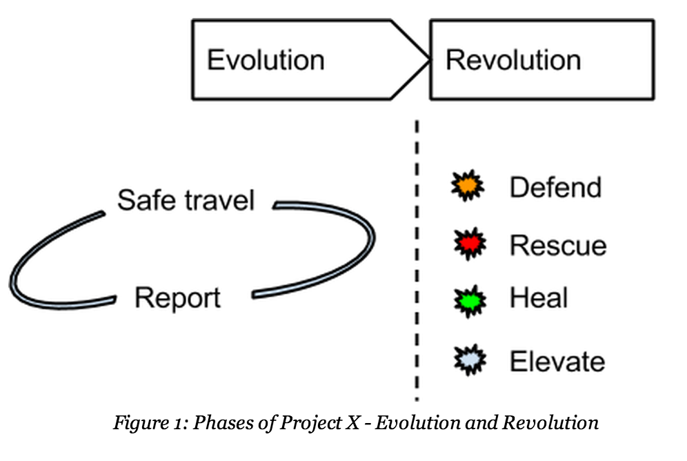
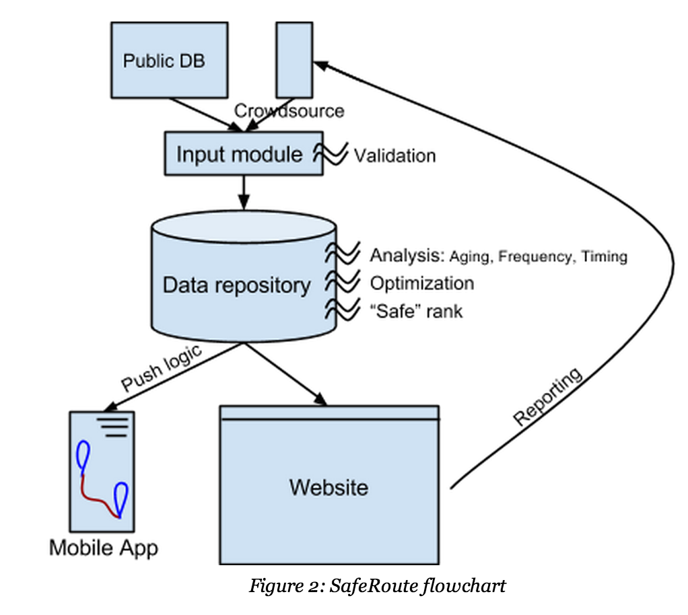

Project X
Top Secret Information. Restricted Access
Our project is focused around that pivotal mishap that brings the victim’s life to a full stop. Can we take precautions to avoid such an incident? Can we prepare ourselves in advance for an attack? Can we alert people around us and our loved ones if we are actually attacked? Can we become a part of a society that looks out for itself - can we alert others so they are safe in future?
We will roll out Project X in 2 phases:

Phase 1: Evolution
Based on the scenario on the ground today, how do we protect ourselves?
SafeRoute
Through awareness and parental discipline we are taught to be alert and take precaution. Children, specially girls, are taught to come home before it gets dark. We all know that the stakes in case of a mishap are too high. Furthermore, x% of incidents occur during travel. Think of all the recent cases that could have been avoided if the victims knew safer routes to get home.
Our first phase is SafeRoute: a mobile application to route our users safely to their destination. The product will be a simple interface to chart out a map from point a to point b, highlighting the safest route possible between the two. Powering this selection will be logic applied to crowdsourced database of reported incidents.

Phase 2: Revolution
ENOUGH. It’s time to break out of the mould. It’s time to step up and change. First yourself, and then people around you. We can do this, one person at a time.
Defence
First, our app will have a defense section. Periodically our fitness expert panel will drop in a new tip to protect yourself / people around you, from the time of app download. This could range from using a pepper spray to jabbing your attacker to give you enough time to get away. We aim to teach our users basic self-defence moves with photos, description and how-to-videos.
Rescue Me
Inspired by the helpless of women and rising crimes against them, an esteemed member of our team has developed an anti-molestation device. The basic idea behind this device is to paralyse an attacker for a few minutes, giving the victim a chance to escape. He studied that a the average speed of female nerve impulses transmitted from the brain to other parts of her body is 60 metre per second. In case of any attempt of molestation, the speed of the nerve impulses increase to 119 metre per second. It is then that this device detects the increased nerve impulse and stings the attacker with a small electric shock of 0.01 amperes. On contact, the attacker is left paralysed.
Given this start, we want to create a tiny hardware detector that can be worn on a ring or an earring. In times of attack, the victim could press this detector to activate software on her phone (assumption is that the phone is lying within the radius of attack). The phone is now on full alert; it first drafts an emergency message with exact location of attack to a list of local NGO volunteers and the victim’s family. Next, it composes an ‘alert’ message and sends it to our app users in vicinity of the incident. Also, it becomes an open portal continuously propagating GPS coordinates to any receiver requesting for it. Last, it turns on audio recording to capture any names to assist in future investigations.
Heal
Assaulted and abused, our victims live on only to deal with an uglier aftermath: being outcast by her friends and even family. The ugly truth is the victim is further victimized. The hypocrisy of it all leaves a permanent scar on her: one that pulls the brakes on her life.
We want to create an anonymous social forum with support of our NGO partners, where oppressed victims can receive counselling. This is an effort to welcome them back into normal life by creating a positive can-do aura around the victim. The goal is to help her break free from the shackles of rape.
Elevate
This part of our project will have the most ever-lasting effect, and is the least framed currently. With the help of our NGOs we want to create and distribute media to educate our society about the atrocities against women. We aspire to work with the Indian education arm to add a mandatory course cultivating respect for women. For the masses in the villages we want to do a major outreach with volunteers to change the mindset. This is a hard problem to solve, and admittedly will take several years, if not decades to solve.